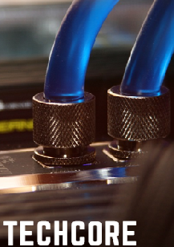

Understanding the Basics of CPUMemory, Motherboards, and Power Supplies  |
Read.
This article guides readers through the basic features of a computer, starting with the most fundamental stages. It delves into technical design, explaining the purpose of the CPU while detailing its core components, such as the ALU (Arithmetic Logic Unit) and CU (Control Unit). The article also compares static and dynamic memory, discussing their respective advantages and challenges. Additionally, it explores the differences between SATA sockets and RAM slots on a motherboard and explains the logic behind the color-coded cables in a power supply. |
Essentials of Computer HardwareInput/Output Devices, Display Technologies, and Storage Solutions  |
Read.
Although this guide provides a basic introduction to the hardware of the personal computer, it is sufficient to familiarize the user with the most important components of the computer. It defines several input and output devices and describes the purpose of Wireless input devices, and how they interface with computers. To support the discussion, there is side-by-side analysis of the workings of the LCD and CRT technologies and how these screen produce images. The guide also features other topics such as different types of printers and uses and differences in HDDs and SSHDs internally. And last but not the least, it presents the definitions and contrasting of DAS, NAS, SAN and Cloud storage system and discussing about the features and advantages of each of them. |